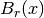
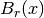
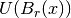
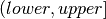
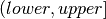
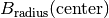

Random¶
Uniform¶
We call an  matrix uniformly random if each entry is drawn
from a uniform distribution over some ball , which is centered
around some point
matrix uniformly random if each entry is drawn
from a uniform distribution over some ball , which is centered
around some point  and of radius
and of radius  .
.
- void Uniform(int m, int n, Matrix<T>& A, T center=0, typename Base<T>::type radius=1 )¶
Set the serial matrix A to an
matrix with each entry sampled from the uniform distribution centered at center with radius radius (templated over datatype, T).
- void Uniform(int m, int n, DistMatrix<T, U, V>& A, T center=0, typename Base<T>::type radius=1 )¶
Set the distributed matrix A to an
matrix with each entry sampled from the uniform distribution centered at center with radius radius (templated over datatype, T, and distribution scheme, (U,V)).
- void MakeUniform(Matrix<T>& A, T center=0, typename Base<T>::type radius=1 )¶
Sample each entry of A from , where
is given by radius and is given by center (templated over the datatype, T).
- void MakeUniform(DistMatrix<T, U, V>& A, T center=0, typename Base<T>::type radius=1 )¶
Sample each entry of A from , where
is given by radius and is given by center (templated over the datatype, T, and distribution scheme, (U,V)).
HermitianUniformSpectrum¶
These routines sample a diagonal matrix from the specified interval of the real line and then perform a similarity transformation using a random Householder transform.
- void HermitianUniformSpectrum(int n, Matrix<F>& A, typename Base<F>::type lower=0, typename Base<F>::type upper=1 )¶
Build the
 serial matrix A with a spectrum sampled uniformly from the interval  (templated over the datatype, F).
serial matrix A with a spectrum sampled uniformly from the interval  (templated over the datatype, F).
- void HermitianUniformSpectrum(int n, DistMatrix<F, U, V>& A, typename Base<F>::type lower=0, typename Base<F>::type upper=1 )¶
Build the
distributed matrix A with a spectrum sampled uniformly from the interval (templated over the datatype, F, which must be a field, and the distribution scheme, (U,V)).
- void MakeHermitianUniformSpectrum(Matrix<F>& A, typename Base<F>::type lower=0, typename Base<F>::type upper=1 )¶
Sample the entries of the square serial matrix A from the interval (templated over the datatype, F).
- void MakeHermitianUniformSpectrum(DistMatrix<F, U, V>& A, typename Base<F>::type lower=0, typename Base<F>::type upper=1 )¶
Sample the entries of the square distributed matrix A from the interval (templated over the datatype, F, and the distribution scheme, (U,V)).
NormalUniformSpectrum¶
These routines sample a diagonal matrix from the specified ball in the complex plane and then perform a similarity transformation using a random Householder transform.
- void NormalUniformSpectrum(int n, Matrix<Complex<R>>& A, Complex<R> center=0, R radius=1 )¶
Build the
serial matrix A with a spectrum sampled uniformly from the ball  (templated over the real datatype, R).
- void NormalUniformSpectrum(int n, DistMatrix<Complex<R>, U, V>& A, Complex<R> center=0, R radius=1 )¶
Build the
distributed matrix A with a spectrum sampled uniformly from the ball (templated over the real datatype, R, and the distribution scheme, (U,V)).
- void MakeNormalUniformSpectrum(Matrix<Complex<R>>& A, Complex<R> center=0, R radius=1 )¶
Sample the entries of the square serial matrix A from the ball in the complex plane centered at center with radius radius (templated over the real datatype, R).
- void MakeNormalUniformSpectrum(DistMatrix<Complex<R>, U, V>& A, Complex<R> center=0, R radius=1 )¶
Sample the entries of the square distributed matrix A from the ball in the complex plane centered at center with radius radius (templated over the real datatype, R, and the distribution scheme, (U,V)).